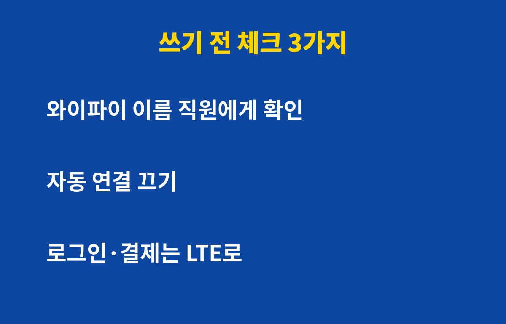
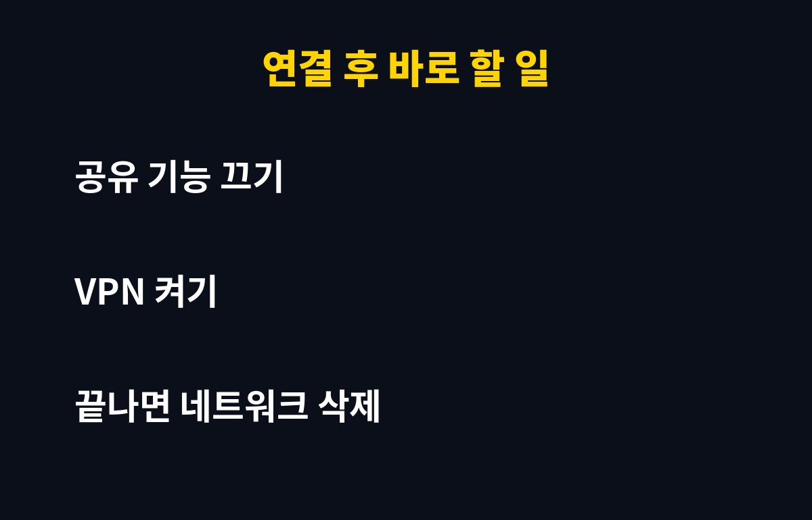

공용 와이파이는 비밀번호가 걸려 있어도 같은 망에 접속한 사람 누구나 내 통신을 엿볼 위험이 있는 환경이에요. 카페나 지하철에서 자주 쓰신다면 특히 조심해야 해요.
그런데 몇 가지 설정만 바꾸면 오히려 LTE보다 편하게 쓸 수 있어요. 이유는 아래에 있어요.
비밀번호가 영수증에 적혀 있는 카페 와이파이는 사실상 모두가 같은 열쇠를 쓰는 셈이에요. 같은 망에 있는 사람이 가짜 와이파이를 만들거나 통신 내용을 가로채려는 시도를 할 수 있어요.
특히 이름이 비슷한 가짜 와이파이가 가장 흔한 함정이에요. 예를 들어 카페 이름 뒤에 숫자나 'free'만 붙여 놓고 사람들이 연결하기를 기다리는 방식이에요.
요즘은 대부분의 사이트가 암호화(https)를 쓰기 때문에 예전만큼 위험하지는 않아요. 하지만 암호화가 안 된 앱이나 가짜 로그인 화면으로 유도하는 수법은 여전히 있어서 방심하면 안 돼요.

첫째, 스마트폰의 '자동 연결'을 켜 둔 채 다니는 거예요. 한 번 연결했던 이름과 같은 가짜 와이파이에도 폰이 알아서 붙을 수 있어요.
둘째, 와이파이에 연결한 상태로 은행 앱이나 쇼핑 결제를 하는 거예요. 급하다고 바로 결제하는 순간이 가장 위험해요.
셋째, 로그인 화면이 갑자기 떠서 이름·전화번호·인증번호를 입력하라고 할 때 그대로 입력하는 거예요. 정상 와이파이는 보통 그렇게까지 많은 정보를 요구하지 않아요.
| 상황 | 안전도 | 권장 행동 |
|---|---|---|
| 뉴스·영상 보기 | 비교적 안전 | 그대로 사용해도 돼요 |
| SNS·메일 로그인 | 주의 | VPN 켜고 사용하세요 |
| 은행·결제 | 위험 | 반드시 LTE/5G로 전환하세요 |
| 회사 문서·업무 메신저 | 위험 | VPN 또는 개인 데이터를 쓰세요 |
가게 직원에게 와이파이 이름을 정확히 물어보세요. 비슷한 이름이 여러 개 보이면 가장 먼저 의심해야 해요.
자물쇠 표시가 없는 열린 와이파이는 되도록 피하세요. 비밀번호가 있는 곳이 아주 안전한 건 아니지만 열린 망보다는 낫습니다.
연결한 뒤에는 폰의 파일 공유, 에어드롭, 기기 검색 같은 공유 기능을 꺼 두세요. 낯선 사람에게 내 기기가 보이는 걸 줄여 줘요.

사용이 끝나면 저장된 네트워크를 삭제해 주세요. 그래야 다음에 같은 이름의 가짜 와이파이에 자동으로 붙는 일을 막을 수 있어요.
그리고 결제나 로그인을 이미 했다면 비밀번호를 바꾸고, 2단계 인증을 켜 두는 게 좋아요. 이상한 로그인 알림이 오면 바로 비밀번호부터 바꾸세요.
평소에는 데이터 요금제가 넉넉하다면 중요한 일은 그냥 개인 데이터로 하는 게 제일 간단하고 확실해요. 와이파이는 가벼운 검색과 영상용으로만 쓴다고 생각하면 편해요.
도움이 되셨다면 구독 눌러 두시고 생활 속 IT 꿀팁도 놓치지 마세요!
기사·공식 발표 기준이며 출시·가격 정보는 바뀔 수 있어요.